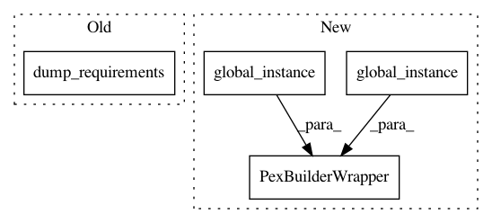

a368267b6b4cf50138ba567f582409ed31bf5db9,contrib/python/src/python/pants/contrib/python/checks/tasks/checkstyle/checkstyle.py,Checkstyle,checker_pex,#Checkstyle#Any#,111
Before Change
builder.add_requirement(self._CHECKER_REQ)
except DistributionNotFound:
// We need to resolve the checker from a local or remote distribution repo.
pex_build_util.dump_requirements(builder,
interpreter=interpreter,
reqs=[PythonRequirement(self._CHECKER_REQ)],
log=self.context.log)
builder.set_entry_point(self._CHECKER_ENTRYPOINT)
builder.freeze()
After Change
if not os.path.exists(pex_path):
with self.context.new_workunit(name="build-checker"):
with safe_concurrent_creation(pex_path) as chroot:
pex_builder = PexBuilderWrapper(
PEXBuilder(path=chroot, interpreter=interpreter),
PythonRepos.global_instance(),
PythonSetup.global_instance(), self.context.log)
// Constraining is required to guard against the case where the user
// has a pexrc file set.
pex_builder.add_interpreter_constraint(str(interpreter.identity.requirement))
In pattern: SUPERPATTERN
Frequency: 3
Non-data size: 4
Instances
Project Name: pantsbuild/pants
Commit Name: a368267b6b4cf50138ba567f582409ed31bf5db9
Time: 2018-10-26
Author: nh@baroquebobcat.com
File Name: contrib/python/src/python/pants/contrib/python/checks/tasks/checkstyle/checkstyle.py
Class Name: Checkstyle
Method Name: checker_pex
Project Name: pantsbuild/pants
Commit Name: a368267b6b4cf50138ba567f582409ed31bf5db9
Time: 2018-10-26
Author: nh@baroquebobcat.com
File Name: src/python/pants/backend/python/tasks/resolve_requirements_task_base.py
Class Name: ResolveRequirementsTaskBase
Method Name: resolve_requirement_strings
Project Name: pantsbuild/pants
Commit Name: a368267b6b4cf50138ba567f582409ed31bf5db9
Time: 2018-10-26
Author: nh@baroquebobcat.com
File Name: src/python/pants/backend/python/tasks/pex_build_util.py
Class Name:
Method Name: dump_requirement_libs